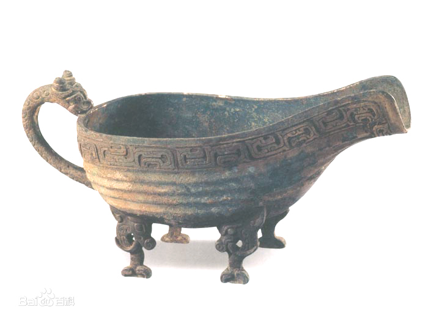

西汉（公元前202年—公元8年）
西汉（公元前202年—公元8年 [1] ）是中国历史上的大一统王朝，共历十二帝 [2] ，享国二百一十年，又称为前汉。
秦末天下揭竿而起，经过楚汉之争，刘邦击败项羽 [3] ，公元前202年刘邦在山东定陶 [4] 称帝，国号汉，都洛阳，三个月后定都长安。 [5-6] 西汉诸多制度上承袭秦制，汉初实行轻徭薄赋、休养生息的国策，社会经济迅速恢复。 [7]
汉武帝继位后，推行推恩令、独尊儒术、加强中央集权。 [5] 对外开拓朝鲜、南据越南、西逾葱岭、北达阴山 [8] ，奠定汉朝基本疆域；派张骞出使西域、沟通中原与西域各国的联系。西汉自武帝之后，皆以外戚辅政。汉昭帝继位后，霍光辅政。汉宣帝时期，设置西域都护府，正式将西域纳入版图 [9-11] 。汉元帝即位后，皇权旁落、外戚与宦官势力兴起，西汉开始走向衰败，又历经汉成帝、汉哀帝、汉平帝。公元8年王莽废除孺子婴太子之位，建立新朝，西汉灭亡。
秦末天下揭竿而起，经过楚汉之争，刘邦击败项羽 [3] ，公元前202年刘邦在山东定陶 [4] 称帝，国号汉，都洛阳，三个月后定都长安。 [5-6] 西汉诸多制度上承袭秦制，汉初实行轻徭薄赋、休养生息的国策，社会经济迅速恢复。 [7]
汉武帝继位后，推行推恩令、独尊儒术、加强中央集权。 [5] 对外开拓朝鲜、南据越南、西逾葱岭、北达阴山 [8] ，奠定汉朝基本疆域；派张骞出使西域、沟通中原与西域各国的联系。西汉自武帝之后，皆以外戚辅政。汉昭帝继位后，霍光辅政。汉宣帝时期，设置西域都护府，正式将西域纳入版图 [9-11] 。汉元帝即位后，皇权旁落、外戚与宦官势力兴起，西汉开始走向衰败，又历经汉成帝、汉哀帝、汉平帝。公元8年王莽废除孺子婴太子之位，建立新朝，西汉灭亡。
